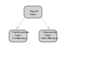
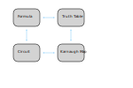

This course about digital logic is splitted into two big chunks:
-
Combinatorial circuits (without memory elements)
-
Sequential circuits (with memory elements)

While combinatorial circuits consists of boolean gates interconnected without feedback function, sequential gates posses a memory function,which makes them able to progress to another state.
A combinatorial circuit can have n -wide vector of inputs and an m -wide vector of outputs.
Combinatorial circuits can be described in different ways: As a formula, a circuit, a truth table or a Karnaugh map. All these descriptions are convertible into each other.

So lets get started with the fundamental logic gates and boolean algebra in the next post.